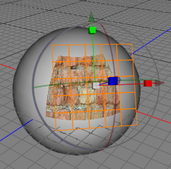

UV Mapper Tool
The UV Mapper Tool can be used to assign UV coords to polygon objects using basic texture projections like spherical or cubic projection. For unwrapping complex objects like a human face the Unwrap UV Tool is recommended.

Modes
The uv mapper tool can only be applied to raw polygon objects. It's only available in polygon mode.

To use the uv mapper tool, select some polygons or a complete raw polygon object. Then call the menu command "Tools UVUV Mapper". Now set all the necessary parameters of the UV mapper tool in the tool properties editor. Finally position the mapping geometry with the transform gizmo until the UV coords satisfy your needs. You can see the UV coords either in the UV Editor or in the 3D view. But for seeing the result of the current mapping in the 3D view the polygon object must have a material with a texture assigned. After clicking the "write UV coords" button, the newly calculated UV coords will be written to the polygon object.
UVUV Mapper". Now set all the necessary parameters of the UV mapper tool in the tool properties editor. Finally position the mapping geometry with the transform gizmo until the UV coords satisfy your needs. You can see the UV coords either in the UV Editor or in the 3D view. But for seeing the result of the current mapping in the 3D view the polygon object must have a material with a texture assigned. After clicking the "write UV coords" button, the newly calculated UV coords will be written to the polygon object.
Keys
- ESC: Resets the tool.
Properties
- mapping type:
- cubic: Cubic texture mapping geometry.
- spherical: Spherical texture mapping geometry.
- flat: Flat texture mapping geometry.
- cylindrical: Cylindrical texture mapping geometry.
- frontal: UV mapping via the screen space
- only selection: Determines if UV coordinates should be assigned to all polygons or only to the selected polygons.
- offset: Add an offset to the newly calculated UV coordinate.
- scale: Multiply the newly calculated UV coordinate.
- center projection: Move the mapping geometry to the center of the current polygon selection.
- write UV coords: Press that button to assign the UV coords generated by the current mapping type to the polygon object.
Example
Assign UV coordinates to a polygon selection
- Select a raw polygon object.
- Switch into polygon mode.
- Select the polygons to which you want to assign UV coordinates.
- Choose the UV Mapper Tool.
- Set the UV Mapper Tool property only selection to yes.
- Select the mapping type.
- Position the mapping geometry with the transform gizmo.
- When you are finished press the write UV coords button. Now the new UV coords will be written to the polygon object.
- Continue with step 3 until you have assigned UV coords to all polygons.